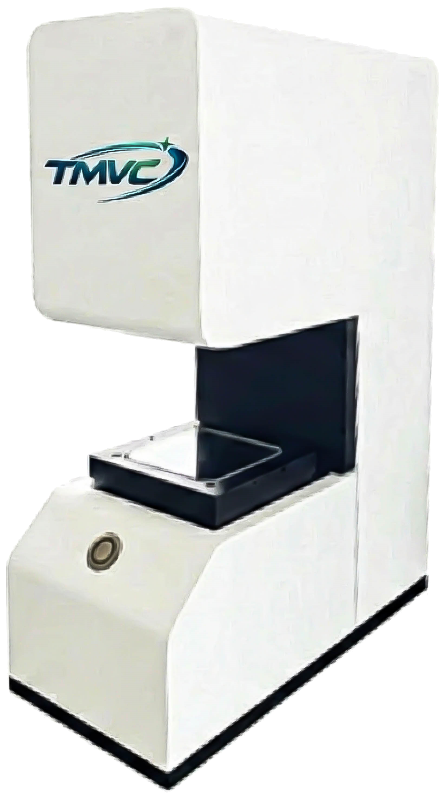

桌上型量測儀
一鍵觸發，自動識別工件特徵。專為精密工件打造的高效率測量解決方案。

產品簡介
天目科技桌上型量測儀採用先進的背光成像與影像處理演算法，使用者只需將工件隨意放置於載物台上，按下測量鍵，系統即可在秒級時間內完成所有尺寸的抓取與判定。適合應用於精密沖壓、電子零件、密封圈及其它各類小型組件的品質控管與全檢。
核心價值： 任意放置、自動搜尋、快速匹配、輸出報表。
產品優勢
極速測量效率
無需對位、無需夾具，工件任意擺放即可瞬間完成測量，大幅縮短單件檢測週期。
高穩定性與重複性
排除人為操作差異，自動抓邊與計算，確保不同操作員得到的結果具備高度一致性。
智慧化數據分析
內建 CPK 統計功能，自動生成 PDF/Excel 報表，實現生產品質的數位化管理。
操作簡單直覺
介面友好，僅需基礎訓練即可上手，快速建立測量程序並部署於現場。
型錄規格表
| 項目 \ 型號 | TMVC-TM34X29 | TMVC-TM100X80 |
|---|---|---|
| 量測主機 | TMVC 量測專用主機 | TMVC 量測專用主機 |
| 螢幕規格 | 21.5 吋, 1080P | 21.5 吋, 1080P |
| 工業相機 | 5M 工業相機 | 20M 工業相機 |
| 工業鏡頭 | 0.24X 雙遠心鏡頭 | 0.108X 雙遠心鏡頭 |
| 量測範圍 | 34 × 29 ㎜ | 100 × 80 ㎜ |
| 量測精度 | (2 + L/100) ㎛ | (3 + L/100) ㎛ |
| 照明光源 | 遠心平行光源 (綠光) | 遠心平行光源 (綠光) |
| 輔助光源 | 環形光源 (白光) | 環形光源 (白光) |
| 顯示單位 | 0.1 ㎛ | 0.1 ㎛ |
| 電源輸入 | AC220V / 2A | AC220V / 2A |
| 儀器尺寸 | 215 × 440 × 635 ㎜ | 215 × 440 × 635 ㎜ |